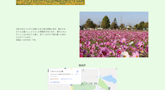
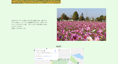

About this site
このサイトはエンジニア初学者の大谷 凌也のポートフォリオサイトです。
私がどのような人物なのか？これまでに手がけた制作物、身につけたスキルなどを簡単にまとめています。
このサイトを見て下さった皆様に私のことをもっと深く知ってほしいと思い作りました。
About me
Profile
1995,09,01生まれ
兵庫県出身
機械系エンジニアを経験した後、アパレル業を経て26歳で働く環境や場所に縛られたくないと思い、web系エンジニアになろうと決意する。
Hobby
Basketball
学生の頃からずっとプレイしてます。学生の頃は下級生の時でも上級生とプレイしていましたが、今では周りについて行くのがやっとです…
Hiking
約2年前からコロナの影響で運動不足になった事がきっかけで始めました。頂上に登った時の爽快感がたまらなくて多い時で週1ペースで登山しています。
Comic&Animation
子供の頃から漫画やアニメが好きで良く見てます。特に週刊少年ジャンプが好きで小学生の頃からずっと購読してました。
Skills
FRONTEND SKILLS
- Javascript
- jQuery
- HTML5/CSS3/SASS
BACKEND SKILLS
- PHP
- WORDPRESS
Works
jQuery
jQueryでコンテンツに動きをつけることを目的として制作したサイトです。
世界観は私自身がアニメ好きという事もあってジョジョの奇妙な冒険にしてみました。
主な動きとしては、サイトを開いたときのローディング画面、左上のハンバーガーメニューをクリックした時に画面の左側からメニューが出るようになる、画像がクリックでスライドする、inputタグがアコーディオンなってる、topに戻るボタンを押すとスクロールして最初に戻る。などの動きを実装しました。
PHP
PHPを用いてサーバーサイド言語を理解するために制作しました。
コンセプトは私の好きなスポットを紹介するサイトです。画像が自動でスライドするようにしており、その画像をクリックするとスポットの詳細が書いてある別ページに飛ぶようにししてます。
お問い合わせ実装し、inputタグに入力した文字を実際に別のページに反映させる事に成功したが、なぜそうなったのか認識するのに苦労しました。
SQLを使用して取得したデータをCRUD処理もできます。
 

API
APIを取得し、それを利用したサイトを作ることを目的に作成しました。
今回使用したAPIが全国の駅名だったので、山手線のデータを取得してすごろくゲームを作りました。
普通のサイトではなかったのでコンテンツのレイアウト、JSでサイコロの数値を取得してその数値をマス目に紐付けるのが苦労しました。ちなみにサイコロも自作です。
WORDPRESS
WORDPRESSのテーマ化を目的に作成しました。
jQueryやSASSにプラスでWORDPRESSのプラグインを使い、メニューバー・画像のスライド・投稿記事など誰でも簡単にコンテンツの内容を変更できるようにするのを実装しました。
ペアワークだった事もありコード設計に悩んだが、タスク(Googleスプレッドシート)・ソース(git)などの開発環境の設定・管理が出来たのもとても良い経験でした。
レスポンシブ対応も完璧です。
Contact
お問い合わせを頂ける際は、下記のSNSのDMからよろしくお願い致します。